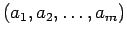
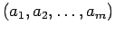

In the classical case symplectic versions of the straightening formula
have already been given in [Co, 2.4] and
[O2, section 7]. In principle, we will
follow the lines of the latter paper.
But there are a lot of additional difficulties,
one of which forces us to work with a reversed version of  -symplectic
standard tableaux.
To prepare for the statement, we define the algebra
-symplectic
standard tableaux.
To prepare for the statement, we define the algebra
by factoring out the ideal generated by the quantum coefficient of dilation.
Since  is homogeneous this algebra is again graded. Let us abbreviate
its -th homogeneous summand by
is homogeneous this algebra is again graded. Let us abbreviate
its -th homogeneous summand by
 .
Since
.
Since  is grouplike the comultiplication
is grouplike the comultiplication  obviously factors to
and
. But
is not a bialgebra and
are not coalgebras, because the augmentation map
obviously factors to
and
. But
is not a bialgebra and
are not coalgebras, because the augmentation map  does not factor. In the classical case if is a field
does not factor. In the classical case if is a field
 equals the coordinate
ring of the symplectic semigroup
by [O2, remark 7.5]. The missing augmentation map corresponds
to the missing unit element in the semigroup. Therefore we call
a semi bialgebra.
equals the coordinate
ring of the symplectic semigroup
by [O2, remark 7.5]. The missing augmentation map corresponds
to the missing unit element in the semigroup. Therefore we call
a semi bialgebra.
We put an order on the set
of all
partitions of , writing
if and only if  occurs before in the lexicographic order.
In this order the fundamental weight
occurs before in the lexicographic order.
In this order the fundamental weight

 is the largest element, whereas
is the
smallest one. We define
is the largest element, whereas
is the
smallest one. We define
 (resp.
) to be the
(resp.
) to be the  -linear span in
-linear span in  of all
bideterminants
such that
(resp.
)(cf. axiom (C3*) of a cellular coalgebra).
Clearly
.
of all
bideterminants
such that
(resp.
)(cf. axiom (C3*) of a cellular coalgebra).
Clearly
.
Before starting to prove this, we deduce its most important consequence:
PROOF: From the fact that  is central in
is central in
 by Remark 4.1 we see that
multiplication by
by Remark 4.1 we see that
multiplication by  from the right (written as below)
leads to an exact sequence
from the right (written as below)
leads to an exact sequence
for  .
Therefore, using induction on we can reduce to showing that
.
Therefore, using induction on we can reduce to showing that
is a set of generators for . For this claim it is enough to show that
is a set of generators of
 for each partition
for each partition
 . To get the last claim from the
straightening formula 8.1, observe that
the involution
. To get the last claim from the
straightening formula 8.1, observe that
the involution  is well defined on
since
is well defined on
since
 (see section 7).
Applying
(see section 7).
Applying  to the congruence relation of Proposition 8.1,
one obtains another such formula in which the roles of
to the congruence relation of Proposition 8.1,
one obtains another such formula in which the roles of  and
and
 are exchanged. This shows that
are exchanged. This shows that
 is indeed a set of
generators for
.
is indeed a set of
generators for
.

In order to prove the quantum symplectic straightening formula we need a corresponding algorithm. Its classical counterpart is [O2, Proposition 7.3]. We define a map by , where
and order
 writing
if and only if
appears before
 in the lexicographic order (induced by the ordinary
order on
). Next, we
obtain an order
writing
if and only if
appears before
 in the lexicographic order (induced by the ordinary
order on
). Next, we
obtain an order  on
defined by:
on
defined by:
Here, we have denoted by  the lexicographic order on
the lexicographic order on  induced by our special
order
induced by our special
order  on
on
 .
Finally, we obtain a second order
.
Finally, we obtain a second order  on
on  via the embedding
given by
. Now we are able to state the symplectic
straightening algorithm.
via the embedding
given by
. Now we are able to state the symplectic
straightening algorithm.
 mod
mod
Clearly, the straightening formula 8.1 is
an easy consequence of the above proposition since the set  is finite and therefore the elimination of multi-indices
is finite and therefore the elimination of multi-indices  , that are not
, that are not
 -reverse symplectic standard in an expression
must terminate.
-reverse symplectic standard in an expression
must terminate.
The proof of the straightening algorithm will take several sections.
In principle we will proceed in a similar way as in [O2] to prove this
algorithm,
but complications arise because the embedding of
the symplectic group into the general linear group does not extend to quantum
groups. Instead of [O2, Proposition 7.2] we have to establish a
weak form of the quantum symplectic straightening algorithm in a first step.
More precisely, we will first prove 8.3,
where
 is substituted by
.
We start with some technical tools.
is substituted by
.
We start with some technical tools.